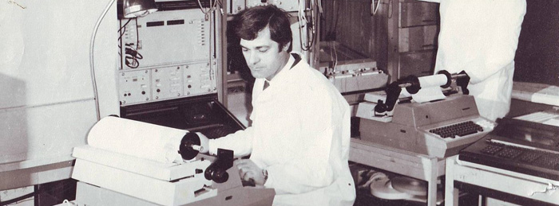
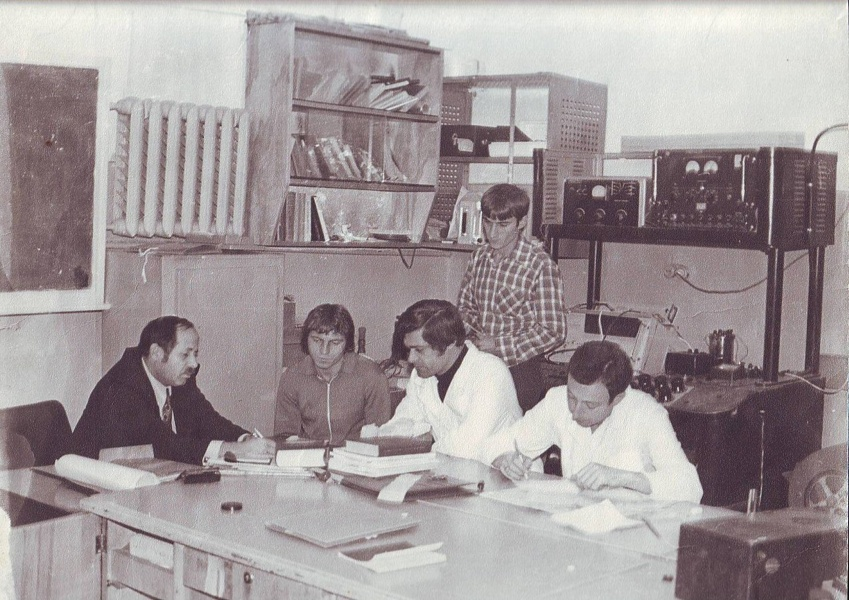
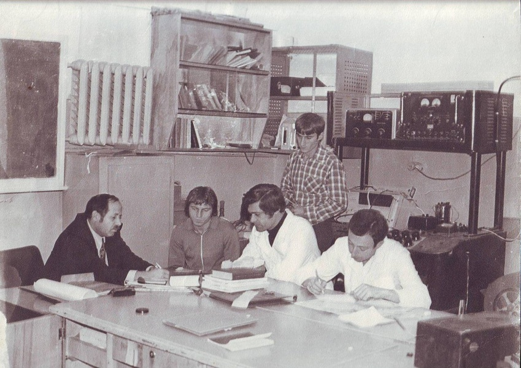

Матиев Ахмет Хасанович
доктор ф/м наук, профессор

Матиев А.Х. - зав. каф. «Общая физика» Ингушского государственного университета, доктор физико-математических наук, профессор кафедры «Физика» Грозненского государственного нефтяного технического университета им. М.Д. Миллионщикова.
Область научных интересов (исследований) – физика полупроводников, микро-электроника, опто-наноэлектроника, нанотехнологии и микросистемы.
Руководитель научных работ по получению и исследованию новых полупроводниковых материалов сложного состава с целью изучения технических возможностей практического применения, получаемых в нашей лаборатории полупроводниковых кристаллов.
Выпустил 5 кандидатов физико-математических наук.
Автор более 270 научно-методических работ.
За последние 5 лет выпущены 4 учебных пособия: по курсу общей физики «Электричество», «Обработка результатов физического эксперимента», «Магнетизм. Колебания и волны» и «Практикум по общей физике» с грифом Министерства образования и науки РФ «Рекомендованы в качестве учебных пособий для студентов ВУЗов».
Руководитель магистратуры по специальности 011200 “Физика”, профиль, подготовки “Физика полупроводников. Микроэлектроника”.
Кафедра «Общая физика» Ингушского государственного университета под его руководством проводит совместные научно- исследовательские работы с Отделением Оптики ФИАН и кафедрой физики полупроводников и полупроводниковой электроники МГИСиС, а также с лабораторией «Кристаллофизики» Института Физики НАН Азербайджана, с отделением физики полупроводников Санкт-Петербургского физико-технического института им. А.Ф. Иоффе РАН согласно договора о научном и творческом сотрудничестве.
Я, Матиев Ахмет Хасанович родился 25 января 1948 г. в г. Алма-Ате. В школе увлекался математикой, физикой, радиоэлектроникой, был неоднократным победителем районных и республиканских олимпиад по физике, математике, химии. Окончил среднюю школу с золотой медалью. В 1966 году стал мастером спорта СССР по радиоспорту, кандидатом в мастера спорта СССР по футболу. В том же году поступил на механико-математический факультет МГУ.
Фото из жизни


Работа в Ингушетии

Работа в Грозном
 


Для связи со мной
email: matiyev-akhmet@yandex.ru
skype: matahmat
facebook: www.facebook.com/akhmet.matiev